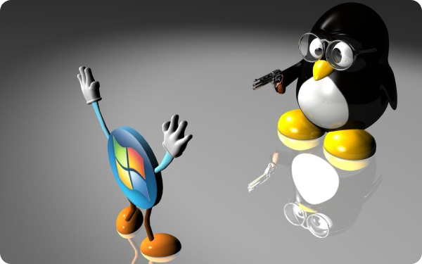

Відкрийте для себе переваги Linux! Ця операційна система є безпечнішою, безкоштовною та гнучкішою ніж Windows. З її відкритим кодом, швидкою роботою та відсутністю реклами, Linux є ідеальним вибором для тих, хто шукає альтернативу Windows. Крім того, Linux може працювати на старому обладнанні, яке більше не підтримується Windows. Перейдіть на Linux сьогодні і відкрийте для себе нові можливості!
